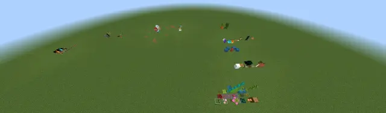
有一说一，这玩意应该不少人都知道，但是好像没看到有谁汇总，我们就算是当一回好人吧，问题不大总之就是先把完全不阻碍方块和部分不阻碍方块都给分类的汇总起来，后面会进行一些补充以及空气类方块性质的分类，问题不大
但是请注意，我们这里的部分不阻碍生成方块，不包括限制类方块，只有挤压类方块，也就是像栅栏门之类的就不会在这里面被提到，问题不大
非法方块的话，会提到一些常用的，但是像是光源方块或者是一些元素，还有拼图方块之类的，就不会提到了
对于那些只针对部分生物有的性质的方块，我们会在总结完之后，在结尾的地方进行一个汇总说明，所以记得看完
一.完全不阻碍生成方块
首先就是完全不阻碍生成方块，首先当然就是绝大部分的植物，包括所有的花、草(除荷叶)、树苗（除杜鹃花）、以及一些奇奇怪怪的植物，这里直接上图
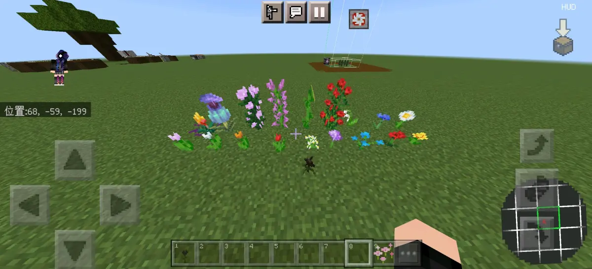
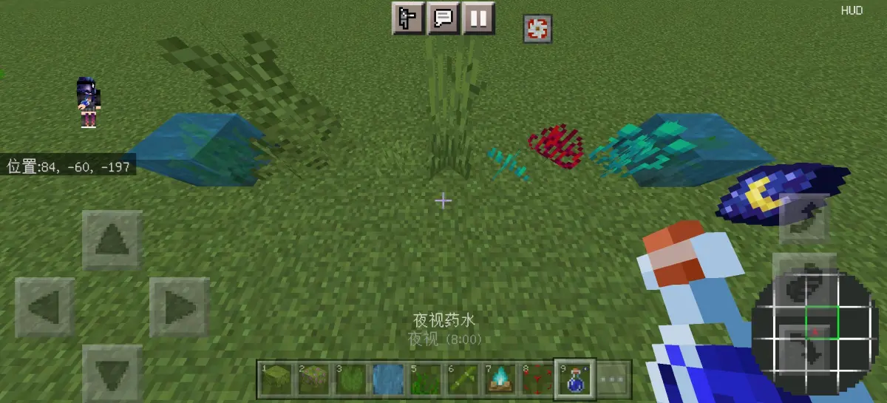
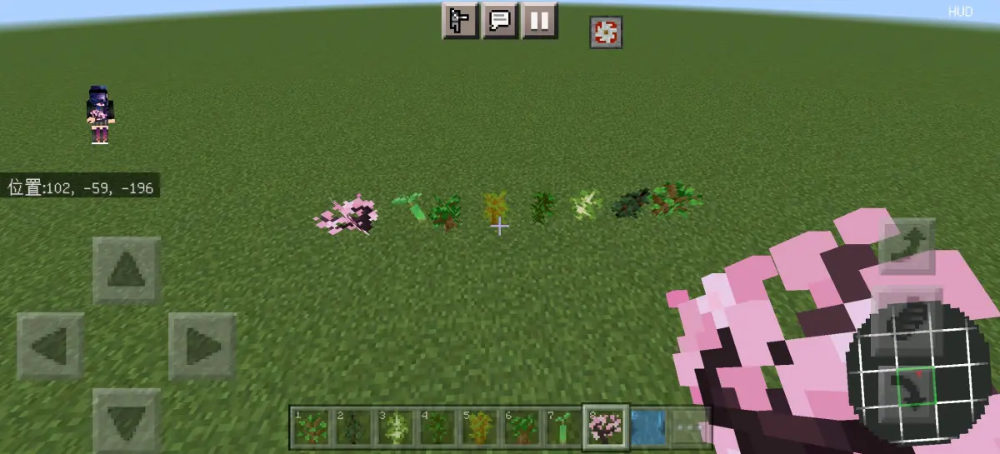
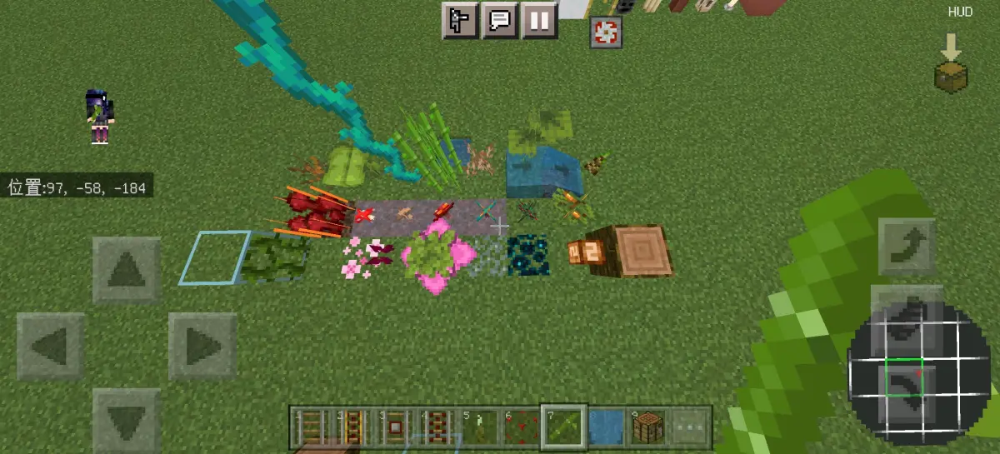
另外，实际上那些农作物也是的，但是因为这些农作物一般是不会出现在生成点位置的，因为农作物必须种在耕地上，但是耕地是不可生成方块，但是如果用结构方块强行把农作物转移到生成点上的话，经过测试发现，农作物本身也是属于完全不阻碍方块，因此也算到里面，问题不大
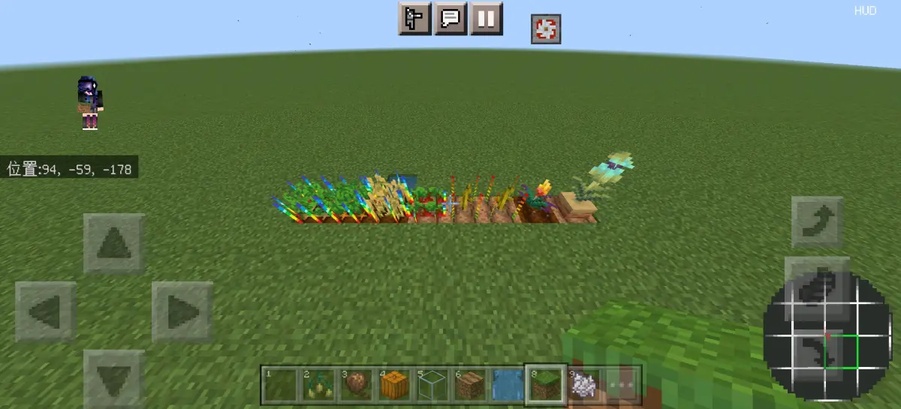
然后再讲完植物之后，接下来就是讲一些常见的完全不阻碍生成方块，当然，之前植物当中已经讲过的就不会再讲了，首先讲一下有碰撞箱的
首先是较为常规的顶层雪，脚手架，生物头颅，蜡烛，花盆，潮涌核心，末地烛，陶罐，末地传送门，末地折越门，梯子
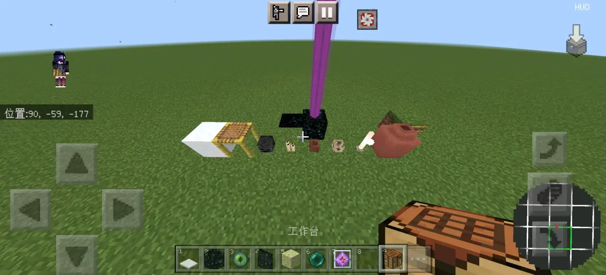
然后还有几个比较特殊的，首先就是边界，他本身的那个部分是个限制，但是他往上下延伸出来的边界部分，是属于完全不阻碍，另外就是含水篝火以及含水中继器比较器，如果看过之前专栏的应该知道，这三个对于除了六角恐龙之外的所有水生生物来说，都是完全不阻碍
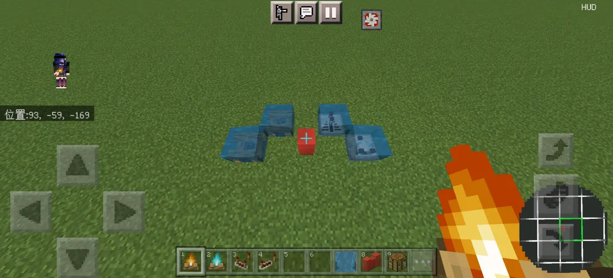
然后接下来就是没有碰撞性的完全不阻碍生成方块，这些就比较多了，出去之前讲的那些植物当中的，其他也还有这些
首先就是常规的蜘蛛网，海泡菜，火把，灵魂火把，两种物品展示框，旗帜（已改为限制类），线，青蛙卵，画，传送门方块，两种火，结构空位，气泡柱
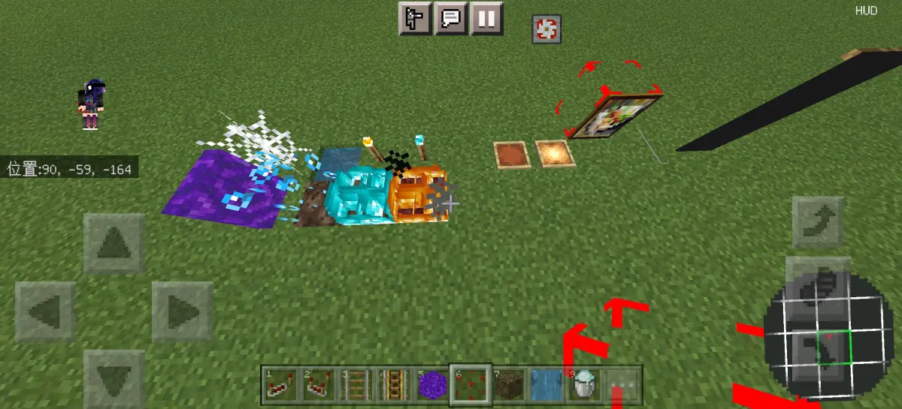
然后还有一些特殊的，主要是以红石元件为主，看过我们之前那个专栏的应该也知道，有一部分板块对于除了六角恐龙之外的水生生物以及僵尸猪人是特殊的判定成完全不阻碍生成方块，除了上面那几个有碰撞箱的之外，这里还有一些没有碰撞箱的
以红石元件为主，分别是四种铁轨，红石粉，拉杆，绊线钩，红石火把
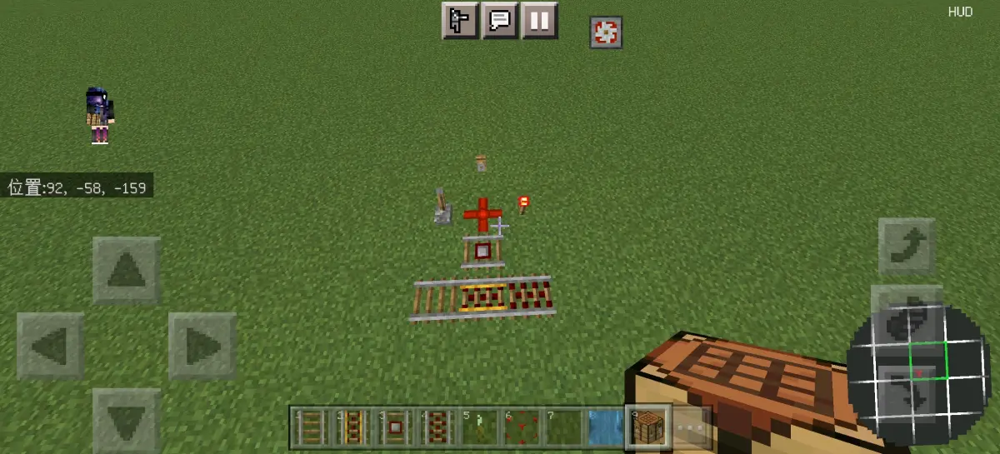
那么基本上的话，完全不阻碍生成方块就这些了，接下来就是部分不阻碍生成方块了，问题不大
另外，包括打开的那个盒子的上半部分，还有光源方块，以及更新方块3，还有MB，以及部分缝合方块之类的就不多说了，问题不大
二.部分不阻碍生成方块
首先的话，部分不阻碍生成方块，我们还是跟完全不阻碍一样，从植物开始，植物的话就很明显，就是仙人掌以及各种树叶，还有苔藓地毯，注意竹子属于限制类方块，问题不大
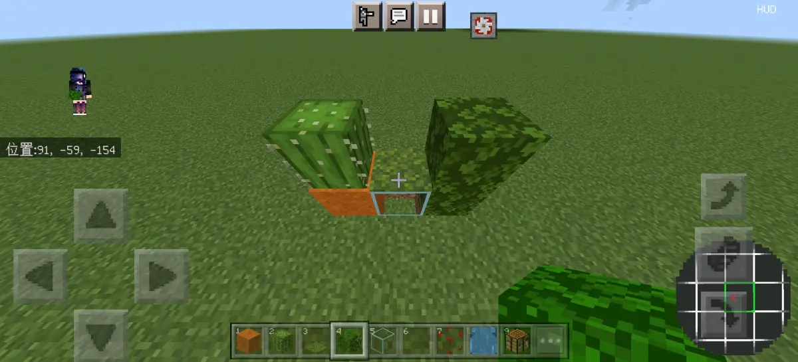
讲完植物之后，接下来的部分不阻碍，我们按照性质来分类，分为挤压类和无限制类，无限制类就是既不是挤压类又不是限制类的方块，问题不大
首先来看一下常规的挤压类的方块，首当其冲的，那肯定是各种玻璃，各种地毯，两种篝火，红石中继器和比较器
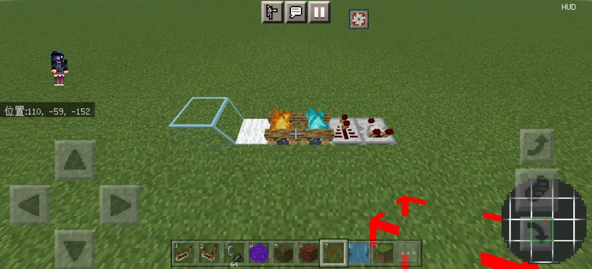
另外还有六个特殊的挤压类方块，都是有同一种性质，就是既可以做生成架，又可以做挤压架，分别是冰，霜冰，TNT，萤石，海晶灯，信标
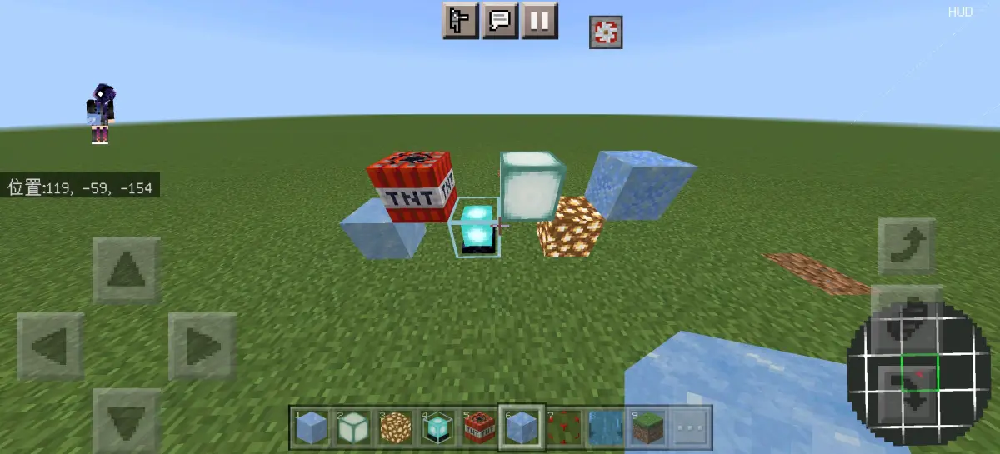
就完挤压类的部分不阻碍生成方块之后，我们来看一下碰撞箱较小或者没有碰撞箱的部分不阻碍生成方块
首先就是玻璃板，绊线钩，红石火把，红石粉，四种铁轨
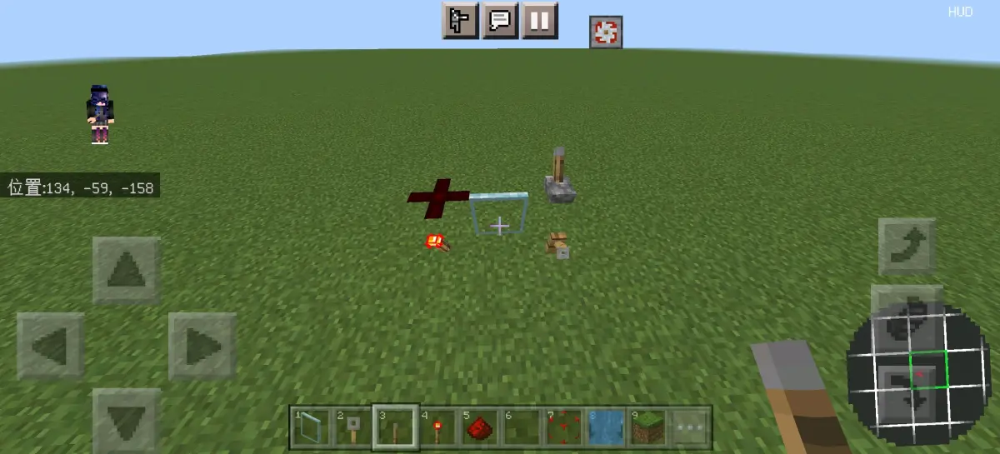
三.特殊方块补充说明
行吧，那基本上就这些，接下来进行一些总结和说明
首先就是墙壁栅栏和栅栏门（关闭）这种本身碰撞体积有1.5格高的，多出来的那个半格，虽然依然可以放方块但实际上已经相当于那个地方存在了一个0.5高的挤压类的方块，跟边界有点相似
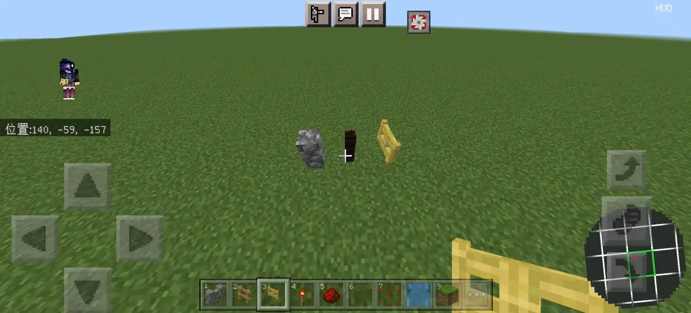
另外就是根据之前的专栏当中的内容
https://b23.tv/06BTaWj
两种篝火，中继器比较器，凋灵玫瑰，四种铁轨，红石火把，红石粉，绊线钩，拉杆，这几个方块对于僵尸猪人以及除了六角恐龙之外的水生生物来说是属于完全不阻碍生成方块，当然得符合对应的性质，比如水生生物含水或者僵尸猪人不能被挤压，但总之，这几个方块确实对于这几种特定的生物来说就是特例，问题不大
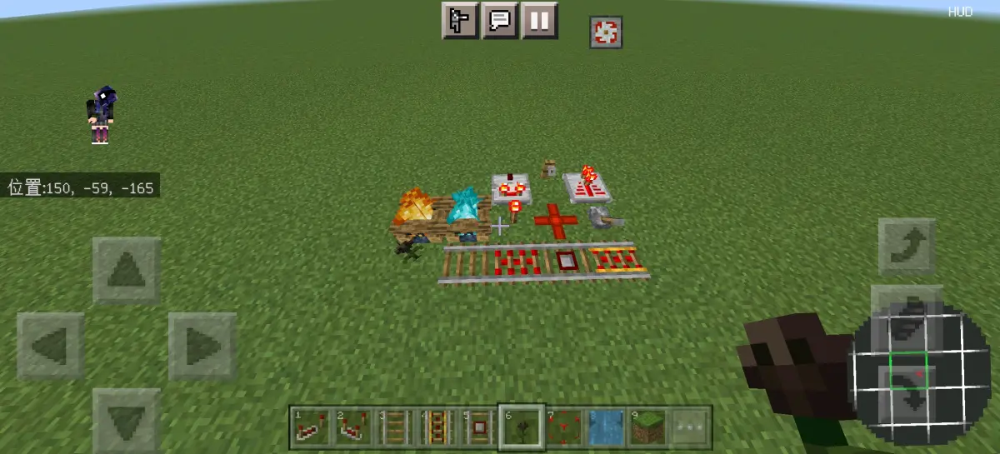
有部分的方块在不同版本的性质不相同，例如篝火，在1.17之前是针对所有生物的完全不阻碍生成方块，1.17之后变为只针对水生生物完全不阻碍对陆地则为部分不阻碍
还有杜鹃花，1.19之前是完全不阻碍，1.19之后变为完全阻碍
荷叶是植物中少有的完全阻碍的方块
竹子在1.19之前好像是完全不阻碍生成方块，但是1.19之后已经变成限制类方块了
还有边界方块在1.19还是1.18之前是可以对僵尸猪人挤压的，但是后面就不行了
以及告示牌和按钮，在之前的有些版本是作为完全不阻碍生成方块的，但是现在已经是限制类方块了
以及凋灵玫瑰在1.19还是1.18之前是正常的，完全不阻碍，但是后面就被改成了只针对部分生物的完全不阻碍，并且在1.19.40之后给凋灵骷髅也加入了其中
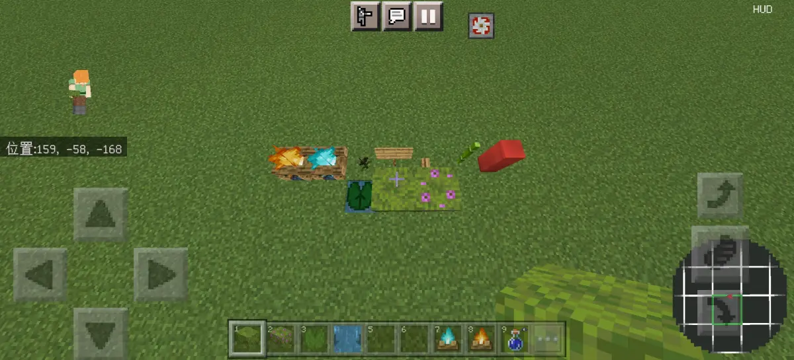
四.空气类性质说明
这里就不详细说，空气类方块的性质有什么了，我们之前第一期专栏就有，没看过的，最好去看一下，而且我们这里说的这些也只是我们上面所提到的，完全不阻碍和部分不阻碍当中出现的方块，其他的并没有统计在内
https://b23.tv/GiOaM2v
1.这里就直接简单说一下，首先就是真空气类方块，在不考虑不常用非法方块的情况下目前有且只有这些，空气，水，岩浆，结构空位（已改为伪空气类），边界和那几个栅栏的上部分
2.然后就是伪空气类方块，所有的完全不阻碍生成方块，除了已经被归类为真空气类方块的之外，都属于伪空气类方块，包括那个几种特殊的，只对部分生物判定为完全不阻碍生成方块的也同样是伪空气类方块
3.最后就是非空气类方块，实际上，除了上面提到的，剩下的所有只具有部分不阻碍生成方块性质的方块都是非空气类方块
实际上，除了完全不阻碍生成方块之外，全部都是非空气类方块包括那些完全阻碍和限制类以及只具有部分不阻碍生成方块性质的也都是
所以归纳起来就是，伪空气类方块和真空气类方块，实际上只是单纯的在完全不阻碍生成方块内部进行的一个再次分类，注意那几个特殊的部分，不阻碍他们对于部分生物来说也是具有完全不阻碍生成方块的性质的，所以也算在完全不阻碍生成方块当中
所以实际上相当于总结起来就是，具有完全不阻碍生成方块性质的方块，内部分为真空气类和伪空气类方块，剩下的所有类型的方块全部属于非空气类方块，问题不大
关于空气类方块的性质，详情看这个专栏
https://b23.tv/GiOaM2v
五.结尾
行吧，总之就这样，那就算是写完了，确实是把所有的完全不阻碍和除了限制类之外的部分不阻碍生成方块都归纳起来了，当然，那些冷门的非法方块就不在统计范围内了，问题不大，顺便还对于空气类方块进行了一下简单的总结和分类，希望能对有需要的人有帮助吧，问题不大
注：此处测试使用的版本是正式版1.20.0，所以所描述的方块性质也均是在该版本下进行的测试，如有差异，应当是版本差异造成的，问题不大
测试版本：1.20.0
部分补充：@Cookie_531